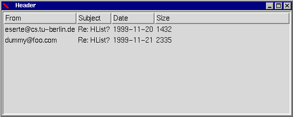
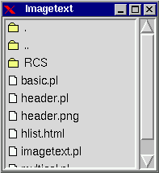
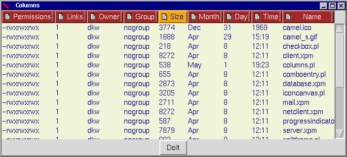

One answer to these questions is the Tk::HList widget. HList is the hierarchical list widget of Perl/Tk. This widget first appeared in Ioi Kim Lam's Tix widget set for Tcl/Tk and is part of the Perl/Tk core.
Some features of HList are:
use Tk::HList;to use this widget. The creation of a HList does not differ from other Perl/Tk widgets:
$hl = $top->HList->pack;
HList entries are inserted with the add method. You have to specify an entry path for each HList entry. Entry paths are just unique names for each list item (the term "path" is used because HList was designed to display trees like directory structures). If you don't care, you can simply use a counter for the entry path, like I did in the example. The sorting of the entries is by default determined by the lexically order of the entry paths. You can also use the options -at, -before or after to set the position in another way. Here's an example:
Add an entry with the string "Bla" and the entry path "bla" into the HList:
$hl->add("bla", -text => "Bla");
Add an entry with the string "Foo" before "bla":
$hl->add("foo", -before => "bla", -text => "Foo");
Add an entry with the string "abc" after "bla":
$hl->add("abc", -after => "bla", -text => "abc");
Add an entry at the the second position (indexes start at zero):
$hl->add("def", -at => 1, -text => "def");
With HList, you can supply the -columns option at the creation of a HList to create a multi-column listbox. See the script multicol.pl for an example.
In a multi-column HList, the add method will set the first column of an entry. The other columns are created with the itemCreate method:
$hl->itemCreate($entry, $column, -text => $text);The column indexing starts at zero. It's also possible to use the itemCreate method to set the first column instead of the add method (which would be a more orthogonal approach).
-header => 1
The header items are created with the headerCreate method. The syntax is similar to the itemCreate method, except that there is no $entry argument. Here's an example script (header.pl).


Moreover, you can assign individual styles to each HList item. This is done using the Tix concept Display Items. There is a manpage Tk::DItem describing this concept and providing examples.
For using display items, first include the ItemStyle module:
use Tk::ItemStyle;After that you can create new styles. Styles can be used by more than one item, so create equal styles only once.
$style = $hl->ItemStyle("text",
-foreground => "red",
-background => "green",
-font => "Times 24");
The first argument (here: "text") specifies the validity of the style
definition,
which have to match the itemstyle defintion.
To use this style, supply the -style option to an add or
itemCreate method:
$hl->add("foo", -style => $style, -text => "Text");
Or to re-configure an existing HList item:
$l->itemConfigure("foo", 0, -style => $style);
Some further examples can be found in ditem.pl.
With the -data option, it is possible to bind data to list entries. The data argument can be any perl scalar, so array and hash references are allowed, too. Data can be retrieved with the info("data") method:
$hl = $top->HList->pack;
# Set entry and data
$hl->add("abc",
-text => "An entry",
-data => ["associated", "data"],
);
# Retrieve data
use Data::Dumper;
print Data::Dumper->Dump([$hl->info("data", "abc")], ['data']), "\n";
use Tk;
$top = new MainWindow;
$txt = $top->Text(-tabs => [qw/2c 4c/])->pack;
$txt->insert("end",
"X\tY\tX*Y\n" .
"1\t1\t1\n" .
"2\t2\t4\n" .
"3\t3\t9\n" .
"4\t4\t16\n");
MainLoop;
If you are familiar wih Text widgets, this could be the way to
go. The common Text tag mechanisms are available for
representing different styles.
The Tk::TiedListbox by Andrew Allen (at CPAN in the Tk-Contrib distribution) provides a way to tie the scrolling of two or more listboxes. That way multi-column listboxes can be emulated by placing several TiedListboxes side by side.
There is another module which appeared in the perl/Tk mailinglist by Greg London called TextList. This module emulates the Tk::Listbox behaviour with a Text widget. That is, all method calls are the same as in Tk::Listbox, but the user can additionaly use the tag mechanism of Text widgets.
Damion K. Wilson has contributed another multi-column listbox in his Tk-DKW package, called Tk::Columns. Additional features are headers and resizable column width (with the technique used for instance in the Netscape mail program). By clicking a header, the listbox gets sorted by this column. The API is simpler than that of HList: for inserting a row with three columns one would simply write:
$Columns->insert ('end', 'List', 'Row', 'Contents');
Here's a screenshot of a Tk::Columns demonstration script:

That's all! As you see, there is always a great variety to achieve a goal with Perl/Tk.